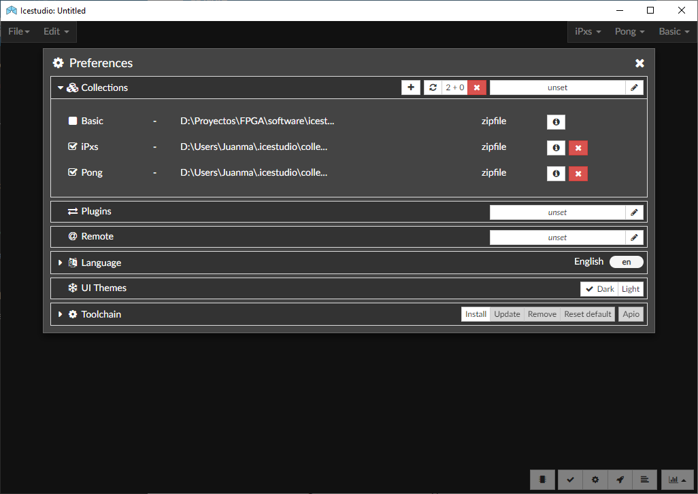

Collections¶
A collection is a directory containing multiple ICE projects. Projects are organized as blocks (to be added as sub-blocks in other projects) or examples (to use, analyze and learn). Projects in each group are sorted by categories (subdirectories).
Each collection MUST have a package.json file in the root, which contains information about the collection. An optional directory, locale, can contain translations. A collection has the following structure:
Collection/ ├── blocks/ ├── examples/ ├── locale/ ├── LICENSE ├── package.json └── README.md
Unlike FPGAwars/icestudio, this variant of Icestudio allows to have multiple collections enabled at the same time. Menu File > Collections shows the list of available/installed collections (either built-in, internal or external). Examples, blocks and information about the collection can be opened from there.
Moreover, checkboxes allow to enable/disable each of collections. Enabled collections are shown on the top right corner, for easy instantiation of reusable blocks.
Note
Collection Basic is always available, and contains blocks and examples distributed with the application.
Managing collections¶
Submenu Edit > Preferences > Manage collections allows to add/remove/reload internal or external collections.
Add (+) |
Add a zipfile with one or more collections. |
Reload |
Reload all the collections from sources. |
Add external |
Set path to external collections dir in your system. |
Remove (x) |
Remove some or all the collections. |
Info (i) |
Show basic collection info (Readme.md). |
{kind=link}

Internal collections are those installed in ~/.icestudio/collections. Zipfiles are used for adding internal collections. A single zipfile can contain at least one or multiple Collection directories at the main level.
As a complement, the external path can be configured. It is the absolute path to a directory on the system, which is expected to contain additional collections or symbolic links to collections.
Basic¶
Contains the basic blocks:
Input: Show a dialog to insert the name and type of the input block.
Output: Show a dialog to insert the name and type of the output block.
Constant: Show a dialog to insert the name and type of the constant block.
Memory: Show a dialog to insert the name and type of the memory block.
Code: Show a dialog to insert the ports and parameters of the code block.
Information: Create an empty text box block.
Note
Input and Output ports can be set to virtual. Virtual ports are used to independent-FPGA
projects. Also, they can be configured as a bus by adding the notation [x:y] to the port name.
Note
Constant and Memory blocks can be set to local. Local parameters are not exposed when the project is added as a block.
Hint
Multiple Input, Output, Constant and Memory blocks can be created using the comma separator.
For example: x, y, z will create 3 blocks with those names. FPGA I/O ports values are set in the block combo box.
These values can be set by searching and also unset by doing click on the cross.
Double clicking over Input, Output, Constant or Memory block allows to modify the block name and type. In Code block ports definition, multiple input and output ports, and parameters, can be created also using the comma separator.